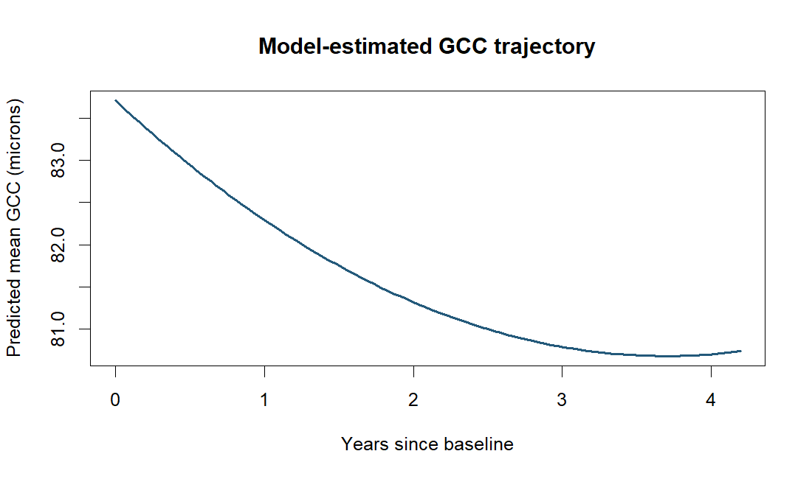

Question
How does GCC thickness change during follow-up, and which covariance structure describes repeated measurements?
What I did
I compared linear and quadratic time trends, then evaluated random effects and residual correlation structures for repeated GCC measurements with a common fixed-effects specification.
Main finding
A quadratic mean trajectory was preferred among the tested mean structures by BIC. With that fixed mean, random intercepts and slopes plus continuous-time AR(1) residuals had the lowest BIC (4078.6). The fitted time terms were −1.634 × time + 0.221 × time².

Important limitations
Model comparisons are exploratory; intervals omit model-selection uncertainty. Baseline severity groups can show regression to the mean even when the baseline visit is removed from follow-up modeling. The fitted curve should not be extrapolated beyond observed follow-up or interpreted as a treatment effect.
I revisited the course analysis to compare mean and covariance structures consistently and account for irregular visit times. Revision details on GitHub →